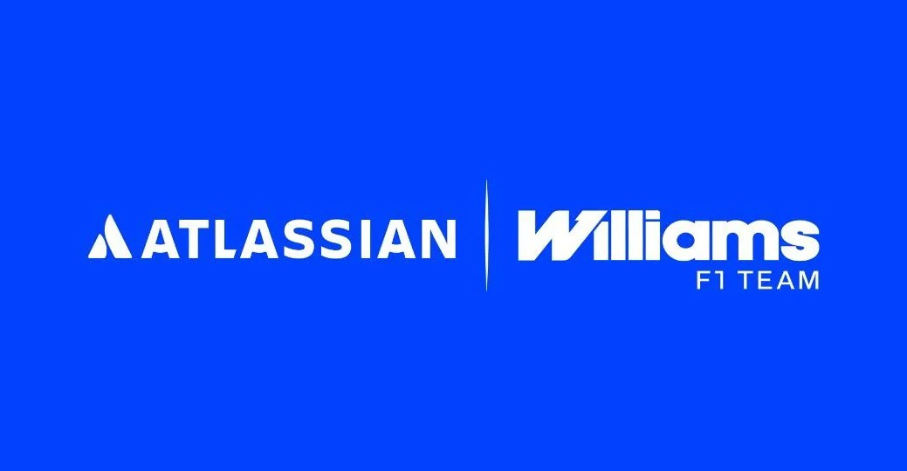

Origen de Williams
Williams Grand Prix Engineering fue fundada en 1977 por Frank Williams y Patrick Head. La escudería comenzó a construir sus propios monoplazas y rápidamente se convirtió en uno de los equipos más importantes de la Fórmula 1.
La época dorada
Durante las décadas de 1980 y 1990, Williams alcanzó una de sus mejores etapas. El equipo consiguió nueve campeonatos de constructores y siete campeonatos de pilotos con grandes figuras como Alan Jones, Keke Rosberg, Nelson Piquet, Nigel Mansell, Alain Prost, Damon Hill y Jacques Villeneuve.
Juan Pablo Montoya
El colombiano Juan Pablo Montoya fue uno de los pilotos más destacados de Williams durante la etapa del equipo junto a BMW. Debutó con Williams en 2001 y consiguió varias victorias y podios, destacándose por su velocidad, agresividad y capacidad para luchar contra los mejores pilotos de la época. En 2004 logró una de sus victorias más recordadas con Williams en el Gran Premio de Brasil.
La etapa con BMW
Entre 2000 y 2005, Williams trabajó junto a BMW utilizando sus motores V10. Durante esta etapa el equipo volvió a luchar por victorias y podios, especialmente con Ralf Schumacher y Juan Pablo Montoya. La relación terminó después de la temporada 2005.
Una etapa complicada
Después de sus años de éxito, Williams comenzó a perder competitividad frente a otros equipos. La escudería atravesó varias temporadas difíciles y llegó a ocupar las últimas posiciones del campeonato, aunque mantuvo su importancia histórica dentro de la Fórmula 1.
Reconstrucción del equipo
En 2020 Williams fue adquirida por Dorilton Capital, iniciando una nueva etapa para la organización. El objetivo fue recuperar progresivamente la competitividad y volver a luchar por posiciones importantes en el campeonato.
Williams en la actualidad
En los últimos años Williams ha mostrado señales de recuperación. El equipo cuenta actualmente con Carlos Sainz y Alexander Albon como pilotos titulares y continúa trabajando para regresar a la parte alta de la parrilla. En 2025 consiguió terminar quinto en el campeonato de constructores, mostrando una importante mejoría respecto a temporadas anteriores.